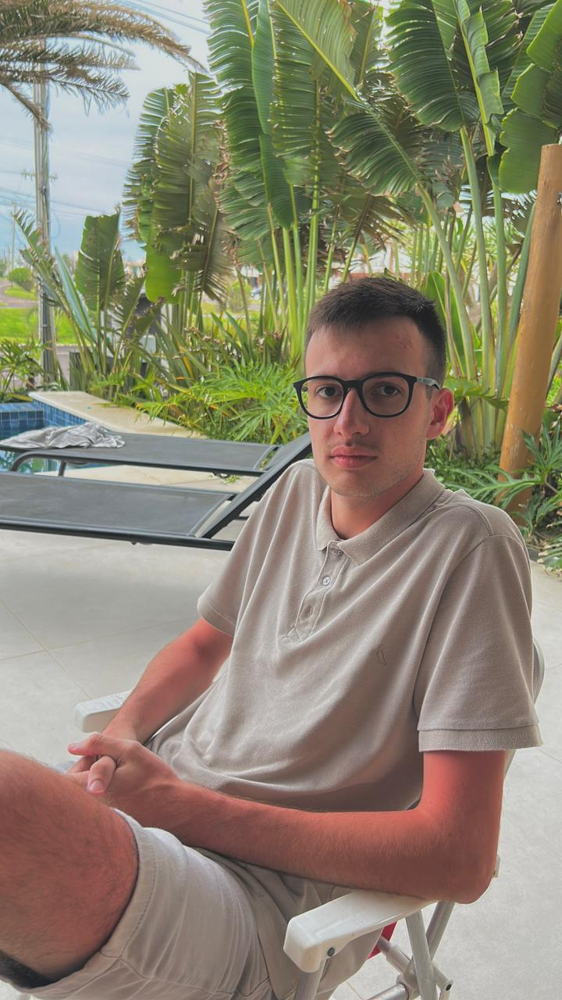

A Terra Venture nasceu de um encontro entre a cabeça e o coração.
De um lado, minha trajetória na administração e tecnologia, que me deu o gosto pelo planejamento minucioso e pela busca por soluções inteligentes. Do outro, uma paixão antiga por liberdade, por pesquisar novas culturas e por viver realidades diferentes da minha.
Mas, se eu olhar bem de perto, a semente da Terra Venture foi plantada muito antes da minha carreira começar.
Fui criado observando homens que são minha maior bússola de conduta: meu pai e meu avô, o Sr. Moacir Joazeiro. Meu avô trabalhou por décadas com turismo e transporte, e mais do que me ensinar sobre destinos, ele e meu pai me ensinaram sobre postura. Com eles, aprendi como agir, como respeitar o próximo e como manter a serenidade em qualquer situação.
Minha Motivação
Não criei a Terra Venture para simplesmente "seguir um legado", meu avô foi um ser único e sua história é só dele. O que eu faço é me inspirar no jeito que ele lidava com as pessoas e com o mundo para construir a minha própria jornada.
Escolhi me jogar de cabeça nessa área porque sou fascinado pelo processo:
- Adoro a pesquisa que descobre o lugar que ninguém conhece.
- Prezo pelo planejamento que garante que você viaje tranquilo.
- Valorizo a integridade em cada combinação que fazemos.
A Terra Venture é o resultado dessa mistura. É a técnica da gestão unida à sensibilidade de quem aprendeu, com os melhores, que viajar é uma das formas mais bonitas de se sentir livre.
